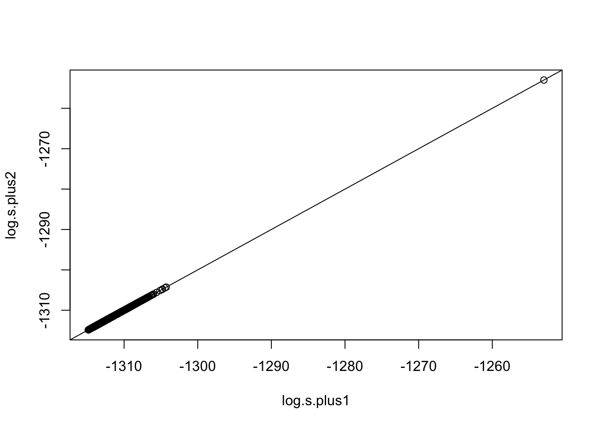

n <- 100
p <- 1000
m <- 5
zeta <- log(n)
Psi <- diag(0.5, m) # Psi
v <- 0.5 # nuR code example for fast computing algorithm
This is a supplymentary document of the R code example.
1 Introduction
This is a supplementary document of a couple of R code examples displaying the time costs using for-loop method compared with fast computing algorithm in the paper Bayesian best subset selection by hybrid search under multivariate regression model of high dimensional data.
The R code examples compute marginal likelihood functions only in addition neighbor of the current model as the code for deletion neighbor is similar. The running time of executing fast computing algorithm and for-loop method is recorded to demonstrate the high efficiency of the proposed method.
2 Review of marginal likelihoods in addition neighbor
For any \(i\notin\hat{\boldsymbol \gamma}\), \(|\hat{\boldsymbol \gamma}\cup\{i\}|=k+1\), hence \(s({\bf Y}|\hat{\boldsymbol \gamma}\cup\{i\})\) in Eq.(6) of the paper can be expressed as
\[ s({\bf Y}|\hat{\boldsymbol \gamma}\cup\{i\})={\zeta}^{-\frac{m(k+1)}{2}}|{\bf X}_{\hat{\boldsymbol \gamma}\cup\{i\}}^{{ \mathrm{\scriptscriptstyle T} }}{\bf X}_{\hat{\boldsymbol \gamma}\cup\{i\}}+\zeta^{-1}{\bf I}_{k+1}|^{-\frac{m}{2}}| {\bf Y}^{{ \mathrm{\scriptscriptstyle T} }}{\bf H}_{\hat{\boldsymbol \gamma}\cup\{i\}}{\bf Y}+{\boldsymbol \Psi}|^{-\frac{n+\nu}{2}}. \tag{2.1}\]
With fast computing algorithm, we have \[\begin{eqnarray} {\bf s}_+(\hat{\boldsymbol \gamma}) &=& c_{\hat{\boldsymbol \gamma}}^+\times \left(\zeta^{-1}{\boldsymbol 1}_p+{\rm diag}({\bf X}^{{ \mathrm{\scriptscriptstyle T} }}{\bf H}_{\hat{{\boldsymbol \gamma}}}{\bf X})\right)^{-\frac{m}{2}}\boldsymbol{\cdot}\\ &&\left[{\boldsymbol 1}_p - \frac{{\rm diag}({\bf X}^{{ \mathrm{\scriptscriptstyle T} }}{\bf H}_{\hat{{\boldsymbol \gamma}}}{\bf Y}({\bf Y}^{{ \mathrm{\scriptscriptstyle T} }}{\bf H}_{\hat{{\boldsymbol \gamma}}}{\bf Y}+{\boldsymbol \Psi})^{-1}{\bf Y}^{{ \mathrm{\scriptscriptstyle T} }}{\bf H}_{\hat{{\boldsymbol \gamma}}}{\bf X})}{\zeta^{-1}{\boldsymbol 1}_p+{\rm diag}({\bf X}^{{ \mathrm{\scriptscriptstyle T} }}{\bf H}_{\hat{{\boldsymbol \gamma}}}{\bf X})}\right]^{-\frac{n+\nu}{2}} \end{eqnarray} \tag{2.2}\] where \({\bf a}^x = (a_1^x,\ldots,a_p^x)\), \({\bf a}\boldsymbol{\cdot}{\bf b}= (a_1b_1,\ldots,a_pb_p)\), \({\bf a}/{\bf b}= (a_1/b_1,\ldots,a_p/b_p)\) for generic vectors \({\bf a}\) and \({\bf b}\), and \(c_{\hat{\boldsymbol \gamma}}^+= {\zeta}^{-\frac{m(k+1)}{2}}|{\bf X}_{\hat{\boldsymbol \gamma}}^{{ \mathrm{\scriptscriptstyle T} }}{\bf X}_{\hat{\boldsymbol \gamma}}+\zeta^{-1}{\bf I}_{k}|^{-\frac{m}{2}}\left|{\bf Y}^{{ \mathrm{\scriptscriptstyle T} }}{\bf H}_{\hat{{\boldsymbol \gamma}}}{\bf Y}+{\boldsymbol \Psi}\right|^{-\frac{n+\nu}{2}}\) is a constant with respect to \(i\notin \hat{\boldsymbol \gamma}\).
Take logarithm of Equation 2.2, we have \[\begin{eqnarray} \log({\bf s}_+(\hat{\boldsymbol \gamma})) = \log(c_{\hat{\boldsymbol \gamma}}^+){\boldsymbol 1}_p-\frac{m}{2}\log({\bf d})-\frac{n+\nu}{2}\log(1-\frac{{\bf u}}{{\bf d}}), \end{eqnarray} \tag{2.3}\] where \({\bf d}= \zeta^{-1}{\boldsymbol 1}_p+{\rm diag}({\bf X}^{{ \mathrm{\scriptscriptstyle T} }}{\bf H}_{\hat{{\boldsymbol \gamma}}}{\bf X})\) and \({\bf u}={\rm diag}({\bf X}^{{ \mathrm{\scriptscriptstyle T} }}{\bf H}_{\hat{{\boldsymbol \gamma}}}{\bf Y}({\bf Y}^{{ \mathrm{\scriptscriptstyle T} }}{\bf H}_{\hat{{\boldsymbol \gamma}}}{\bf Y}+{\boldsymbol \Psi})^{-1}{\bf Y}^{{ \mathrm{\scriptscriptstyle T} }}{\bf H}_{\hat{{\boldsymbol \gamma}}}{\bf X})\).
In the following R code example, we will evaluate \({\bf s}({\bf Y}|{\text{nbd}}_+(\hat{\boldsymbol \gamma}))\) by Equation 2.1 with the for-loop method and by Equation 2.3 with fast computing algorithm, respectively.
3 R code example of Equation 2.1 and Equation 2.3
In this example, we consider the data generation method with
- \(n=100, p = 1000, m = 5, \zeta = \log(n), {\boldsymbol \Psi}= 0.5{\bf I}_m, \nu = 0.5\).
- and generate data \({\bf Y}={\bf X}{\bf C}+ {\bf E}\), where \({\bf E}\sim \mathcal{MN}(0,\bf I_n, {\boldsymbol\Omega})\) with \({\boldsymbol\Omega}= 0.2^{|i-j|}\) and \({\bf X}\sim\mathcal{N}{\bf 0}, {\boldsymbol \Sigma})\) with \({\boldsymbol \Sigma}= 0.2^{|i-j|}\). The true model is \({\boldsymbol \gamma}^* = (1,2,3,4,7,8,9,10)\) with their coefficients \(\bf C_{\boldsymbol \gamma}\) randomly and independently sampled from Uniform{-1.0, -0.8, -0.6, -0.4, -0.2, 0.0, 0.2, 0.4, 0.6, 0.8 , 1.0}. The current model is \(\hat{\boldsymbol \gamma}= (1,2,3,4,7,8,9)\) with model size \(|\hat{\boldsymbol \gamma}| = 7\).
# Generate data
library(mvtnorm)
set.seed(1314)
true.model <- c(1:4, 7:10) # true model
r <- c(1:4, 7:9) # current model
k <- length(r) # current model size
rho_e <- 0.2
Omega <- rho_e^(abs(matrix(1:m, m, m) - t(matrix(1:m, m, m))))
rho_x <- 0.2
Sig_x <- rho_x^(abs(matrix(1:p, p, p) - t(matrix(1:p, p, p))))
seq.p <- c(1:p)
len.true.model <- length(true.model)
# generate random coefficient matrix C
c0 <- sample(seq(-1, 1, 0.2), size = len.true.model * m, replace = TRUE)
C <- matrix(0, p, m) # initialize C with 0 matrix
C[true.model, ] <- matrix(c0, len.true.model, m)
X <- rmvnorm(n, mean = rep(0, p), sigma = Sig_x, method = "chol")
E <- rmvnorm(n, mean = rep(0, m), sigma = Omega, method = "chol")
Y <- as.numeric(X %*% C) + ETo better understand R code and corresponding notations, we list a cross-reference table for some of them as follows:
| I_n | I_k1 | log.s.plus1 or log.s.plus2 | rUi | X.rUi | H.rUi |
| \({\bf I}_n\) | \({\bf I}_{k+1}\) | \(\log({\bf s}({\bf Y}|{\text{nbd}}_+(\hat{\boldsymbol \gamma})))\) | \(\hat{\boldsymbol \gamma}\cup i\) | \({\bf X}_{\hat{\boldsymbol \gamma}\cup i}\) | \({\bf H}_{\hat{\boldsymbol \gamma}\cup i}\) |
| log.s.Y.rUi | I_k | X.r | X_r | H.r | colSums(H.r%*%X_r*X_r) |
| \(\log(s({\bf Y}|\hat{\boldsymbol \gamma}\cup i))\) | \({\bf I}_k\) | \({\bf X}_{\hat{\boldsymbol \gamma}}\) | \({\bf X}_{-\hat{\boldsymbol \gamma}}\) | \({\bf H}_{\hat{\boldsymbol \gamma}}\) | \({\rm diag}({\bf X}_{-\hat{\boldsymbol \gamma}}^{{ \mathrm{\scriptscriptstyle T} }}{\bf H}_{\hat{{\boldsymbol \gamma}}}{\bf X}_{-\hat{\boldsymbol \gamma}})\) |
| YHX_r | |||||
| \({\bf Y}^{{ \mathrm{\scriptscriptstyle T} }}{\bf H}_{\hat{{\boldsymbol \gamma}}}{\bf X}_{-\hat{\boldsymbol \gamma}}\) |
# For loop method
I_n <- diag(1, n) # n-dimension identity matrix
I_k1 <- diag(1, k + 1) # (k+1)-dimension identity matrix
p_r <- setdiff(seq(1, p), r) # p-k vector
log.s.plus1 <- rep(NA, length(p_r))
j <- 1
for (i in p_r) {
rUi <- sort(c(r, i)) # a model in addition neighbor
X.rUi <- X[, rUi] # n by k+1 submatrix of X
XtX <- crossprod(X.rUi) + 1/zeta * I_k1
H.rUi <- I_n - X.rUi %*% solve(XtX) %*% t(X.rUi)
# logarithm of Eq (1.1) for a model in additional neighbor
log.s.Y.rUi <- -m * (k + 1)/2 * log(zeta) - m/2 * log(det(XtX)) - (n + v)/2 * log(det(t(Y) %*% H.rUi %*% Y + Psi))
log.s.plus1[j] <- log.s.Y.rUi
j <- j + 1
}
# Proposed Method
I_k <- diag(1, k) # k-dimension identity matrix
X.r <- X[, r] # n by k submatrix of X
X_r <- X[, p_r] # n by p-k m sub-matrix of X
H.r <- I_n - X.r %*% solve(crossprod(X.r) + 1/zeta * I_k) %*% t(X.r) # n by n matrix
d <- 1/zeta + colSums(H.r %*% X_r * X_r) # p-k dimension vector
YHX_r <- t(Y) %*% H.r %*% X_r # p-k by m matrix
YHY_1 <- solve(t(Y) %*% H.r %*% Y + Psi) # m by m matrix
u <- colSums(YHY_1 %*% YHX_r * YHX_r) # p-k dimension vector
# last two items of logarithm of Eq (1.3)
log.s.plus1.prop <- -m/2 * log(d) - (n + v)/2 * log(1 - u/d)
# log(c)
log.c <- -0.5 * m * (k + 1) * log(zeta) - 0.5 * m * log(det(crossprod(X.r) +
1/zeta * I_k)) - (n + v)/2 * log(det(t(Y) %*% H.r %*% Y + Psi))
log.s.plus2 <- log.c + log.s.plus1.prop # logarithm of Eq (1.3)There are \(993\) marginal likelihoods in addition neighbor of model \(\{1,2,3,4,7,8,9\}\) in log.s.plus1 and log.s.plus2. We compute mean absolute percentage error \(\text{MAPE} = \frac{1}{n}\Sigma_{t=1}^n|\frac{A_t-F_t}{A_t}|\) to measure the accuracy of the fast computing algorithm.
# Mean absolute percentage error
MAPE <- mean(abs(log.s.plus1 - log.s.plus2)/abs(log.s.plus1))
print(paste("MAPE =", MAPE))[1] "MAPE = 1.55883482799341e-16"plot(log.s.plus1, log.s.plus2)
abline(a = 0, b = 1)
From the plot and MAPE, \(\log({\bf s}({\bf Y}|{\text{nbd}}_+(\hat{\boldsymbol \gamma})))\) computed by Equation 2.1 and Equation 2.3 are the same, which confirms R code is correct. Next is to compute the time cost.
4 Simulation study
Note that \(\log(c_{\hat{\boldsymbol \gamma}}^+)\) is a constant with respect to \(i\notin \hat{\boldsymbol \gamma}\) in Equation 2.3, we can ignore it and only compute log.s.plus1.prop to save time for the purpose of variable selection. We use R package microbenchmark to conduct the simulation study with the default replication 100 times.
library(microbenchmark)
timecost <- microbenchmark("for_loop" = {
log.s.plus1 <- rep(NA, length(p_r))
j <- 1
for (i in p_r) {
rUi <- sort(c(r, i)) # a model in addition neighbor
X.rUi <- X[, rUi] # n by k+1 submatrix of X
XtX <- crossprod(X.rUi) + 1/zeta * I_k1
H.rUi <- I_n - X.rUi %*% solve(XtX) %*% t(X.rUi)
# logarithm of Eq (1.1) for a model in additional neighbor
log.s.Y.rUi <- -m * (k + 1)/2 * log(zeta) - m/2 * log(det(XtX)) - (n + v)/2 * log(det(t(Y) %*% H.rUi %*% Y + Psi))
log.s.plus1[j] <- log.s.Y.rUi
j <- j + 1
}
},
"Proposed" = {
I_k <- diag(1, k) # k-dimension identity matrix
X.r <- X[, r] # n by k submatrix of X
X_r <- X[, p_r] # n by p-k m sub-matrix of X
H.r <- I_n - X.r %*% solve(crossprod(X.r) + 1/zeta * I_k) %*% t(X.r) # n by n matrix
d <- 1/zeta + colSums(H.r %*% X_r * X_r) # p-k dimension vector
YHX_r <- t(Y) %*% H.r %*% X_r # p-k by m matrix
YHY_1 <- solve(t(Y) %*% H.r %*% Y + Psi) # m by m matrix
u <- colSums(YHY_1 %*% YHX_r * YHX_r) # p-k dimension vector
# last two items of logarithm of Eq (1.3)
log.s.plus1.prop <- -m/2 * log(d) - (n + v)/2 * log(1 - u/d)
}
)
timecostUnit: milliseconds
expr min lq mean median uq max neval
for_loop 144.006329 157.604586 195.91860 169.235529 204.147722 502.21531 100
Proposed 1.272944 1.322159 2.08821 1.423167 1.652661 24.11825 100Looking at the median of time cost, the fast computing algorithm is about 120 times faster than the for-loop method.